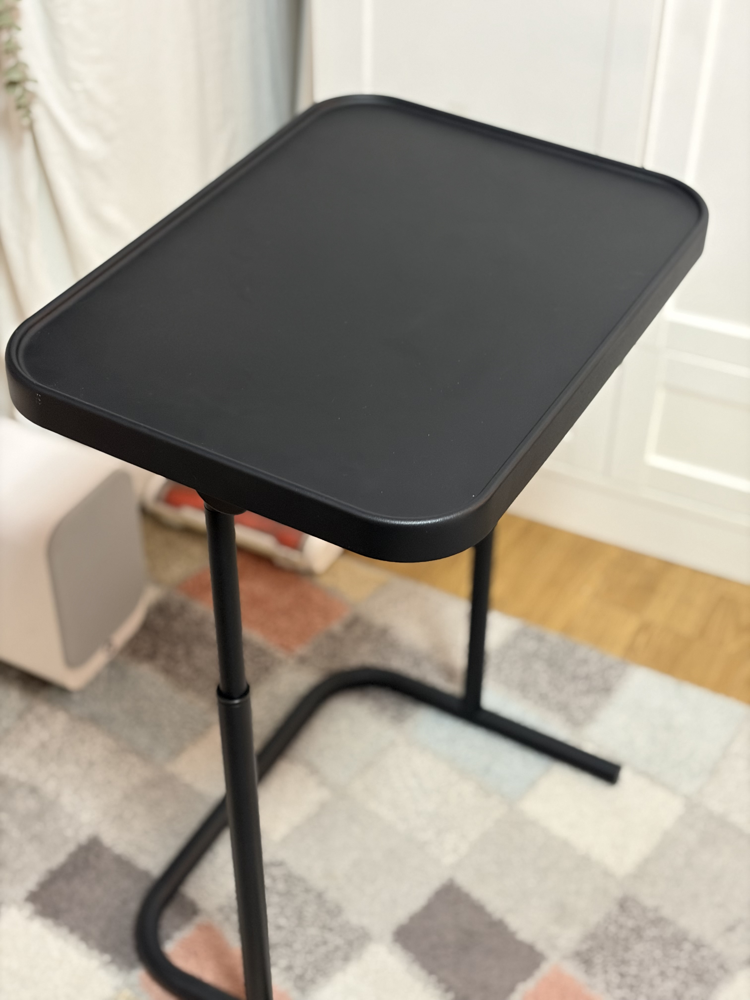
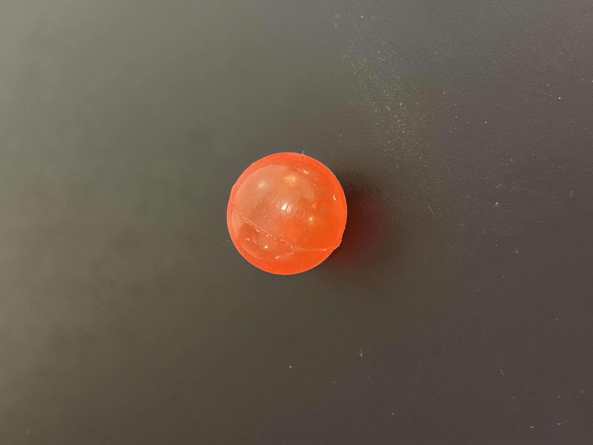
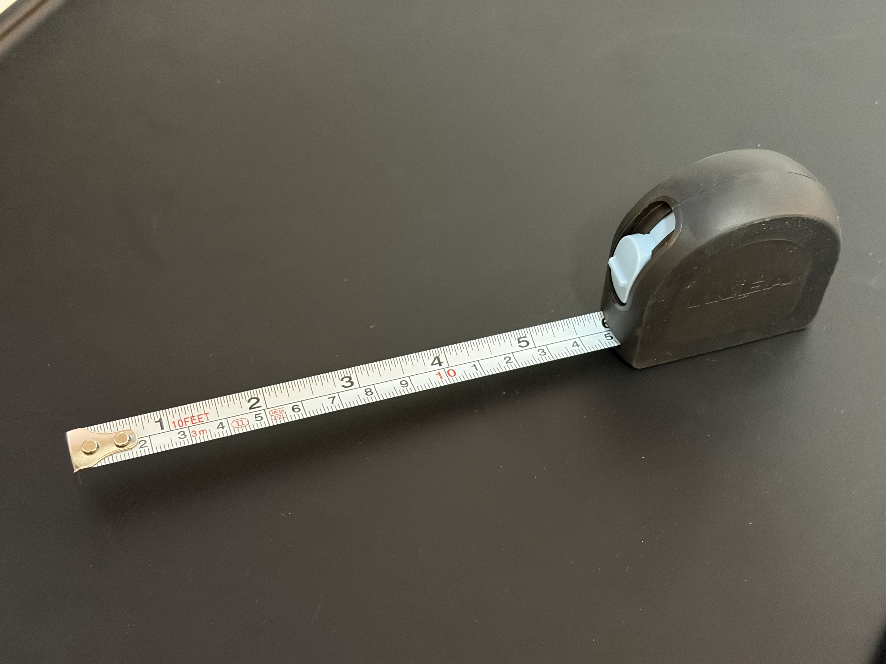
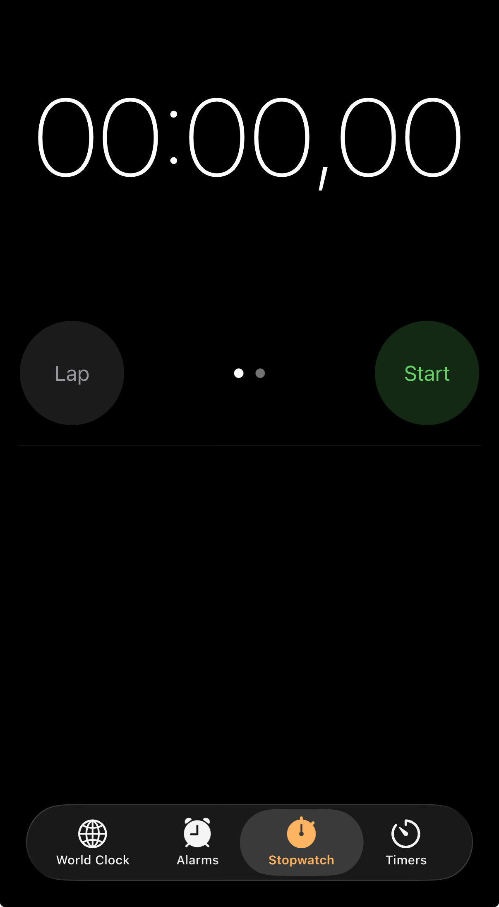
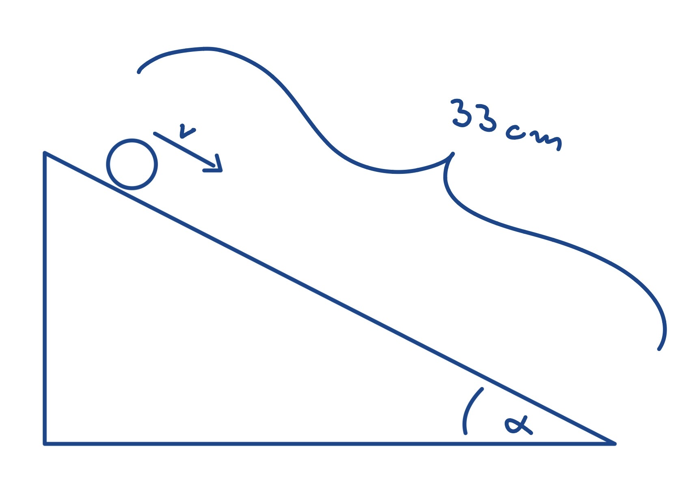

01
Potreban pribor
Za pokus mi je trebalo: stolić (ili daska) koji se može nakositi, kuglica, metar za mjerenje duljine i štoperica za mjerenje vremena.




02
Vlastiti crtež pokusa

03
Način izvođenja
- Postavim stolić pod određenim kutom, tako da nastane kosina.
- Označim početnu točku (vrh kosine) i krajnju točku (dno kosine) te izmjerim duljinu metrom.
- Pustim kuglicu s vrha bez guranja i mjerim vrijeme štopericom dok ne stigne do dna.
- Ponovim mjerenje uz veći kut nagiba stolića i usporedim.
Rezultate i objašnjenje pogledaj na sljedećim stranicama. Ovdje je opisan samo postupak.
04
Video pokusa
Dio 1: postav i pitanje.
Što misliš, hoće li kuglica biti brža, sporija ili jednako brza ako povećam kut nagiba stolića?